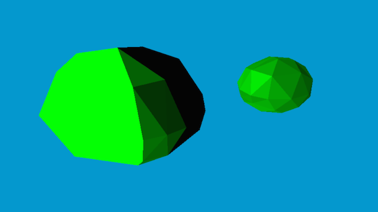
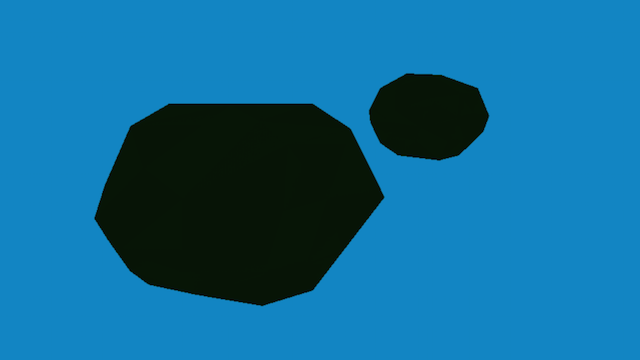

After I had a proof of concept done for procedural generation of low poly world assets, I decided it was time to dig in and get the foundation right
The first thing I added, was a random radius calculation. Initially, the radius would scale up everything, leading to very big variations and ‘roughness’ at larger radii, but tiny variations that made the icosahedrons almost smooth at smaller radii. Correcting for that was rather simple; keep the variations as a factor of the radius, giving a consistent looking ‘randomness’ regardless of overall size

Next up, was the obvious. Looking at the images, it was clear the colours were off. If you look at the bigger sphere there, I am getting almost two shades; one very dark and one very bright, with minimal transition in between. This was disappointing. The colouring on the smaller sphere is what I wanted, and I needed it to be consistent across size
First off in correcting the colours, was the ambient lights. Since I had almost no lights in the scene, I needed to add some ambient light. I set the ambient to a very bright colour, and tried it out


With the ambient lights corrected, I added the rest of the Phong Lighting, sans the specular. However, moving the scene around, I quickly realised my calculations were off. The lights were attached to my camera
The problem was thankfully simple to find and fix. I was multiplying my lights with the camera matrix as well, because I had yet to separate my view / projection / model matrices. Ah well, at least it was easy to spot, and afterwards, I got some half decent results

Finally, for my own personal testing, I added a switch between this low poly flat shading and a smoothed regular shader. It is best seen with surface normals mapped to RGB values


And with the smoothed normals, if I turned back the regular shading with the original colours, the difference would be very obvious. Needless to say, I’m going to be sticking with the low poly looking flat shading purely because of aesthetics

Overall, I am quite happy with the end result for this week (seen below). I still have some problems with the colours, because I have been adding colours in the RGB range using pure vector maths. However, colour theory does not work that way, and I want to switch all my internal colour representations to Hue-Saturation Values, because that is the easier way to add colours to make them ‘brighter’ or ‘darker’ without morphing into a different colour all together